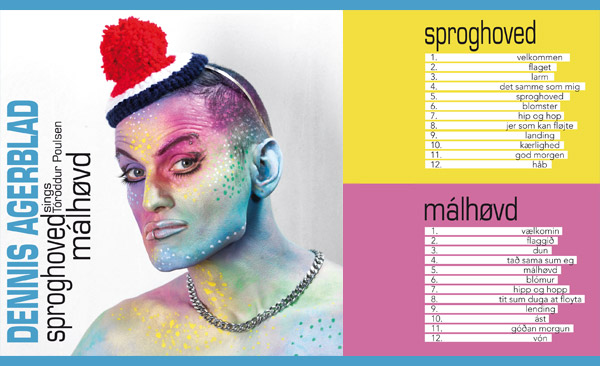

Tíðindaskriv - DENNIS AGERBLAD sings Tóroddur Poulsen.
|

3. september kemur nýggja fløgan hjá mær út. Fløgan eitur "DENNIS AGERBLAD sings Tóroddur Poulsen - Hetta er ein dupultfløga, har "Málhøvd" er heiti á tí Føroysku versiónini, meðan "Sproghoved" er Danska versiónin. - Tað er 12 yrkingar hjá Tóroddi Poulsen ið eg havi gjørt løg til og sungið inn. So ein velur fyrst sítt mál áðrenn ein setur fløguna á. Yrkingarnar eru hesir og úr hesum 5 bókunum: III = Morgunbókin
1. Vælkomin / Velkommen - Villur - síða 33
- Mær dámar sera væl yrkingarnar hjá Tóroddur Poulsen og havi fleiri ferðir lisið upp og umsett fyri vinum. Eg havi eisini verið úti á Literatur cafeum og lisið Tóroddur Poulsen upp. Við effectum á røddini. Eg valdi at útgeva fløguna bæði á Føroyskum og Donskum. Tí eg haldi eisini at danir skula sleppa inn í hansara undarligu verð ið hóskar sera væl til mín. - Tá eg hevði umsett yrkingarnar, var eg noyddur at fara heim til Tórodd. Tí tað var eitt vers eg ikki kundi umseta. Men tað kundi hann heldur ikki sjálvur. Men so fann hann bara uppá naka nýtt. Uppá henda mátan sikraði eg eisini at alt var umsett rætt og góðkend. - Eg havi síðani sitið saman við produsaranum Mathuresh og arbeitt viðari við hvørjum lagi. Og til síðst eru løgini Meistrað av Jan Eliasson ið eisini meistrar: Nic & Jay, Nephew, Tommas Troelsen, Hej Matematik, Peter Sommer & Turboweekend. - Eg ætli at gera 4 sjónbond til hesa fløguna. Men skal eg gera eina føroyska OG ein danska versión? Ella bara velja EITT mál? Fyrsta sjónbandi "Flaggið" valdi eg at taka niðurlagið frá tí donsku versiónini og versini frá tí føroysku. og so við dansk-tekstaðari ummseting av versunum. So øll kundu skilja. Næsta sjónband "Dun" er best gjørt á føroyskum. Eg veit ikki hvussu eg geri við hinar enn. - TUTL útgevur fløguna, meðan tungamusik.dk gevur út download av tónleikinum. Tunga musiK er mítt egna plátufelag. |